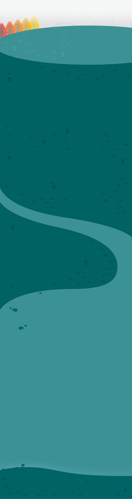
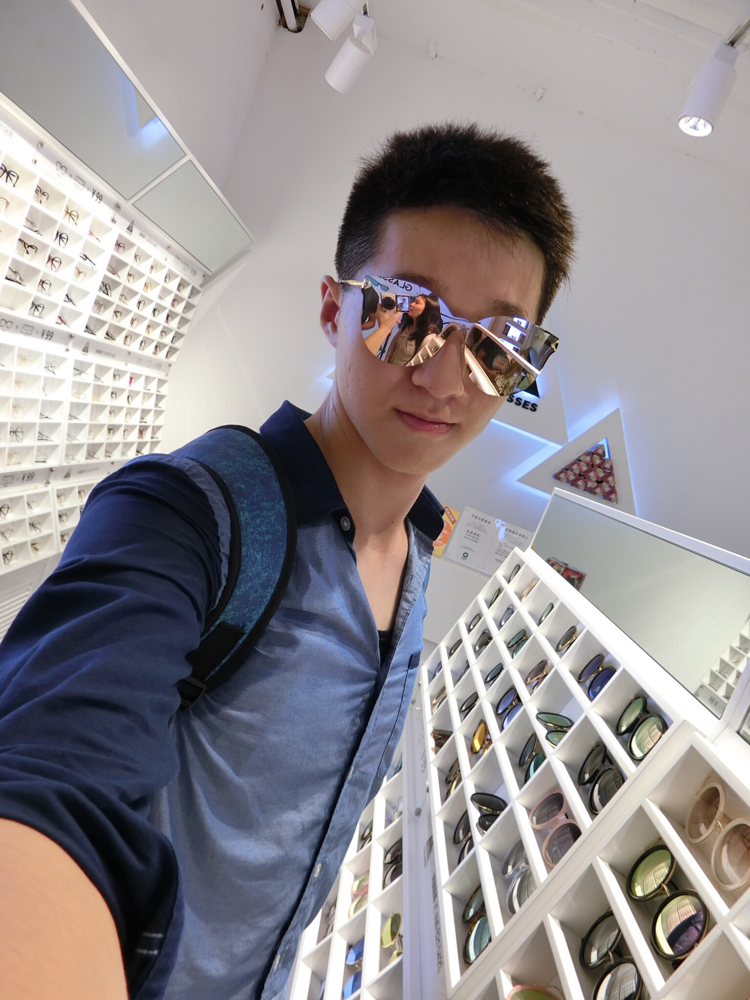
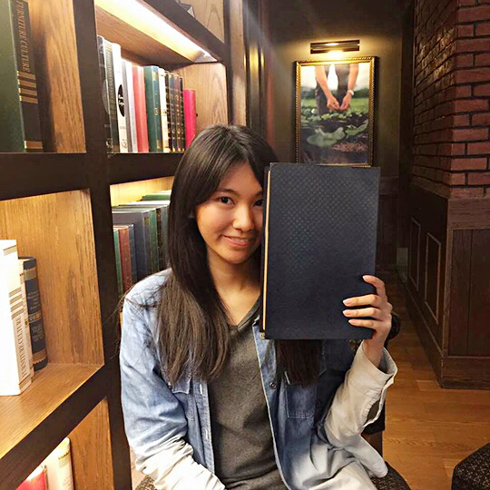

Ｘ
青
年
行
動
日
誌
行
動
夥
伴
故
事
行
動
提
案
牆
活
動
辦
法
關
於
迴
響
最
新
消
息
我們可以如何讓社會開始思考「不穿內衣是一個新選項」
點擊揭曉

Tt 美胸教室
不穿內衣是一個新選項
80% 的女孩覺得穿內衣不舒服，但少有人願意真正脫下內衣，我們認為溯其根本，歸咎於社會的壓力。
有一說，穿內衣是變向的裹小腳，差別只在位置不同。我們從自身經驗出發，利用這次迴響計畫的機會，站出來為女孩發聲，提倡不穿內衣。
這樣的行動或許尚未廣為接受，就像裹小腳也曾經被認為是美麗的。我們一起努力，讓社會更友善。給予穿內衣不舒服的女孩一個自在的生活空間，互相尊重彼此的需求。
「不穿內衣是一種新選項」，在不久的將來，「不穿內衣是一種選項」。
讓我們再多說一些...
我們針對50位女孩進行了深度對談，並將其結果量化，發現其中八成的女孩對於穿內衣都感到不適，但竟然只有一位選擇不穿。歸納其原因有三：（一）社會價值觀的壓力、（二）長輩錯誤的教導、（三）自己覺得自然的胸型是醜陋的。
另外，經過我們研讀各方醫療文獻後，並沒有發現有醫學證明支持穿內衣可以防止胸部下垂；反倒是有另一派說法，是穿內衣「導致」胸部下垂。
議題樹
來看看我們在這議題之中扮演什麼樣的角色！
滑鼠移過揭曉 ▷
行動足跡
來我們的
大本營坐坐
點此前往
10/27
北大創創中心
腦力激盪，傳達理念
10/29
北大創創中心
第一次小組開會
11/07
北大創創中心
第二次小組開會
11/1
北大創創中心
第三次小組開會
11/5
北大創創中心
第四次小組開會
關鍵時點
知己難遇
單打獨鬥，雖然有隊友，但隊友太忙，力不從心。所以，我幾乎一個人完成了 action0，深深瞭解到知己難遇。
但在比賽過程遇到了好幾位知己，包含工作人員，讓我意識到，這是最有機會讓此議題被看到的時機，因為大家都在幫我，只要我堅持下去。
單打獨鬥
確認了單打獨鬥不是壞事，只是比較辛苦一點而已，但可以學到很多東西。
一個人也是完成的，這是其中一位夥伴和我說的。在與夥伴的諮詢過程，我不段的思考，我要不要放棄，因為一個人不可能。
但在夥伴及 Rax（台大 D.school 劉副組長） 身上看到，一開始大家都是單打獨鬥，直到你有一定的成果，才會有人持續加入；若連你也無法堅持，那件事情註定要失敗的。
心酸的眼淚
深深體會缺乏溝通能力是件痛苦的事情。
在公佈Action2晉級組別時，我完全高興不起來，因為那天只有我一個是一人團隊。在旁邊，看到公佈名單前，大家緊張地互相打氣，我只能在旁邊想：「 我也好想要有隊友喔！」但為什麼，我無法聚集隊友與我一起努力？我得到的答案是「我缺乏溝通能力與我不信任他人」
當公布晉級決賽時，我哭了，但不是感動的淚水，是心酸的眼淚，但這也是我 Action 2 要面臨的最大議題。
改變自我
溝通之所以難，是因為不信任隊友。
我一開始與團隊一起工作，我就把氣氛搞來了，但我找不到原因，經過教練的調整，我才知道原因出在，我沒有同理心，而且不溝通導致，隊友不知道我做了哪些事情。
我現在盡力在改變，相信隊友也感受到了，請拭目以待......
革命都需要犧牲
我的夥伴是希慈，他教會我革命都需要犧牲。
我以前都覺得，很多事情都是理所當然的；但現在，覺得任何事情都是理所不當然。
如果當初沒有人提倡解放小腳，我的腳或許現在還是三寸金蓮呢！
所以，我現在要做的事情，可能會衝擊到大眾的價值觀，但我仍然要執行。
因為我站在未來往回看，一定會是值得的。
團隊小故事
最想放棄的時刻
想法的起源
理想中的辦公室
最值得分享的小故事
下一個行動提案
最想放棄的時刻
我最想放棄的時刻是在 Action2 晉級當下。因為我夢想的團隊不是一人團隊，但這也顛覆了我的想像，原來我一個人也做得到。
想法的起源
我是一個平凡的女孩，但卻很討厭穿內衣，不是因為想要對抗世界而討厭穿著內衣；僅僅是因為穿著內衣，會令我窒息、不舒服。有一天我開始不穿內衣出門，但是我卻發現不穿著內衣出門，不是我可以自主決定的選項。為什麼我的身體，我不能自己決定自己的生活方式呢？需要因為外界眼光而妥協。深入問了身邊 50 位女生後，才知道大家都遇到了一樣的問題，但從來沒有人說出來，於是我就想，「 或許我可以為了大家做什麼 」。
現在不開始，要等到什麼時候呢？
理想中的辦公室？為什麼？
可以有很多笑聲，大家願意將心力投入在改變社會上。
辦公室，可以有一個休息空間，2張可以坐下6個人的大桌子即可。
重點是有很多想推廣此理念的人聚造一起，創在品牌價值。
希望在以後，大家想到胸部，第一個想到Tt 美胸教室。
最值得分享的小故事
我的阿嬤是守舊派，他不太能接受我不穿內衣，但有一天他卻說：「如果有一天大家都不穿內衣了，我也不穿了，（穿內衣）太不舒服了。」
超級可愛的阿嬤。
下一個行動提案會是？為什麼？
開發屬於 Tt 美胸教室的新產品並且持續推廣此理念，幫助女孩減少穿內衣的障礙。
我們目前開發項目有：胸貼、減少胸部晃動的舒適球、增強胸大肌訓練的過渡期產品、胸部乳液。
團隊成員
我是美胸教主TT。
我170，我統籌了所有人的空氣。
I don't need sex cuz life fucks me everyday.
關關難過關關過，大家好，我叫關關。
羅苡庭
魏寶娟

陳建廷

王俞涵
這是團隊唯一一次聚在一起。
團隊不為人知的小秘密...
目前隊員是由一次的腦力激盪產生的。
團隊小秘密